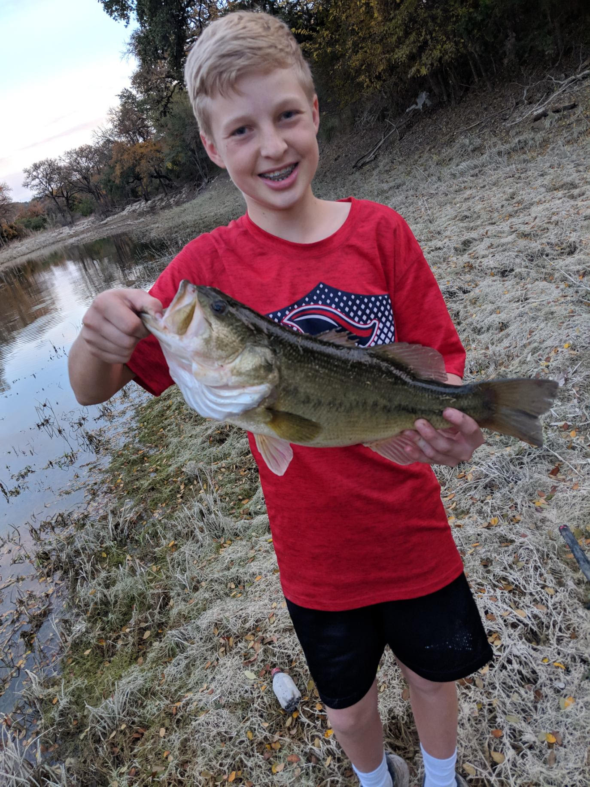

Fishing is an adrenaline-filled blend of skill, strategy, and instinct, where every cast carries the thrill of chance. It challenges you to read the water like a puzzle... tracking currents, weather, and fish behavior all while staying sharp and patient for the strike. When the line tightens, it’s pure adrenaline: a battle of timing, strength, and control between you and the fish. Whether you’re on a quiet lake or raging rapid, fishing delivers moments of suspense and triumph that keeps you coming back for more.

What Kind Of Fish Can You Catch?
Largemouth Bass
One of the most popular sport fish in the U.S.
Prefers warm, shallow waters with cover
Known for strong fights on the line!
Rainbow Trout
Common in cold, clear streams and lakes
Often stocked in rivers and ponds for fishing
Recognized by its pink stripe and beautiful pattern
Catfish
These fish are bottom feeders that rely heavily on smell
Found in rivers, lakes, and reservoirs across the U.S.
Popular for night fishing
Bluegill
Small but abundant fish found in ponds and lakes
Easily caught with simple bait
Known for their quick bites
Walleye
Hihgly prized for its mild, tasty meat
prefers deeper, cooler waters
Most active during low light conditions like sunrise and sunset
Here are some of the best Largemouth Bass caught on camera!